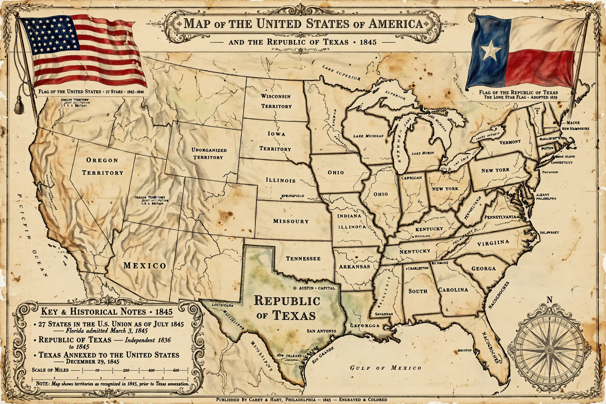

 | |
| Date | 29 December 1845 |
|---|---|
| Location | Republic of Texas / United States |
| Result | Texas admitted to the Union as the 28th state |
The Texas annexation was the 1845 annexation of the Republic of Texas into the United States. Texas was admitted to the Union as the 28th state on 29 December 1845. The process, contentious because of the slavery question and the risk of war with Mexico, was completed by a joint resolution of Congress rather than by treaty.
Texas had declared independence from Mexico in 1836 after the Texas Revolution, and the Republic of Texas sought annexation by the United States almost from its founding. However, annexation was repeatedly blocked in Washington: admitting Texas, where slavery was legal, would upset the sectional balance between free and slave states, and Mexico, which never recognized Texan independence, warned that annexation would mean war.
President John Tyler, whose administration pursued expansion, negotiated an annexation treaty in 1844, but the Senate rejected it, failing to reach the required two-thirds majority. Annexation became the central issue of the 1844 presidential election, won by the pro-annexation Democrat James K. Polk. Tyler then pushed annexation through as a joint resolution, which required only simple majorities in both houses. The resolution passed the House in January 1845 and the Senate by a single vote (27–25) in February; Tyler signed it on 1 March 1845.
The resolution offered Texas admission as a state, allowed it to retain its public lands, and permitted the future division of Texas into as many as five states. A Texas convention accepted the terms on 4 July 1845, and voters ratified them in October. Congress approved the Texas state constitution, and Polk signed the admission act on 29 December 1845. Formal transfer of government took place on 19 February 1846, when President Anson Jones lowered the republic's flag.
Mexico broke diplomatic relations and the annexation, together with a boundary dispute between the Nueces River and the Rio Grande, led directly to the Mexican–American War (1846–1848). The unresolved question of slavery's expansion into the new territories intensified sectional conflict in the years before the American Civil War. The legality of annexation by joint resolution, and Texas's theoretical right to divide into five states, remain topics of historical and legal discussion.